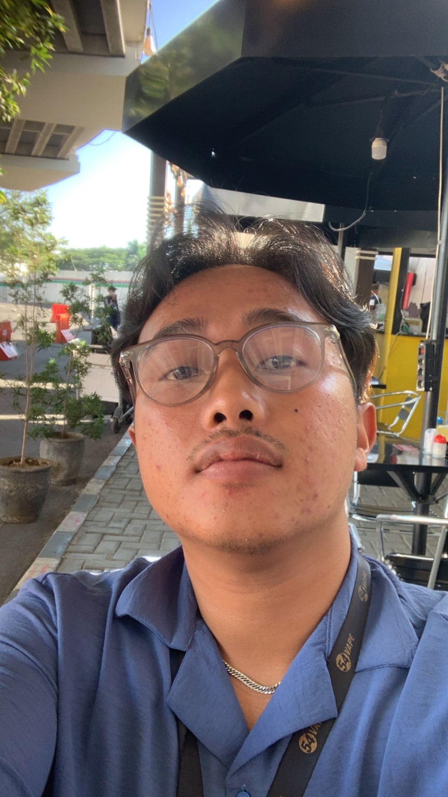

API
Backend & APIs
Service layers, REST APIs, authentication, validation, integrations, and maintainable backend architecture.
I’m Muhammad Aditya Wiryawan Azizi Aswad — an IT graduate and operations/data professional focused on backend engineering, automation, analytics, and practical business systems.

I combine software thinking with real operational experience in procurement, inventory, mining, reporting, and process improvement.
Service layers, REST APIs, authentication, validation, integrations, and maintainable backend architecture.
Structured data modeling, SQL, reporting pipelines, and data quality practices for operational decision-making.
Procurement, inventory, operations, maintenance, and mining exposure help me build software around real workflows.
My career has consistently centered on data accuracy, process support, coordination, and operational improvement.
Managed operational/HSE data, reporting, documentation, presentations, document control, and site coordination.
Processed production data, prepared daily/weekly reports, and monitored equipment utilization and material movement.
Supported operational improvement, KPI monitoring, data analysis, standardized processes, and SAP-based reporting.
Managed spare-part inventory data, purchase requests, supplier coordination, stock monitoring, and procurement reporting.
Machinery supports my work expertice
REST API architecture, authentication, validation, error handling, service-layer design, and integrations.
Relational modeling, querying, data cleaning, analytics, and reporting workflows.
Git-based workflow, environment configuration, documentation, testing mindset, and maintainable code.
Achievent proudly declared as my biggest objective
Backend service for inventory, stock movements, purchase requests, suppliers, reorder thresholds, and reporting endpoints inspired by procurement workflows.
API + dashboard concept turning purchase orders, lead times, supplier performance, and stock data into operational insights.
Machine-learning service for forecasting historical spare-part consumption and supporting inventory planning in mining operations.
I’m open to backend engineering, data-driven operations, automation, and software projects where technology can solve a measurable business problem.